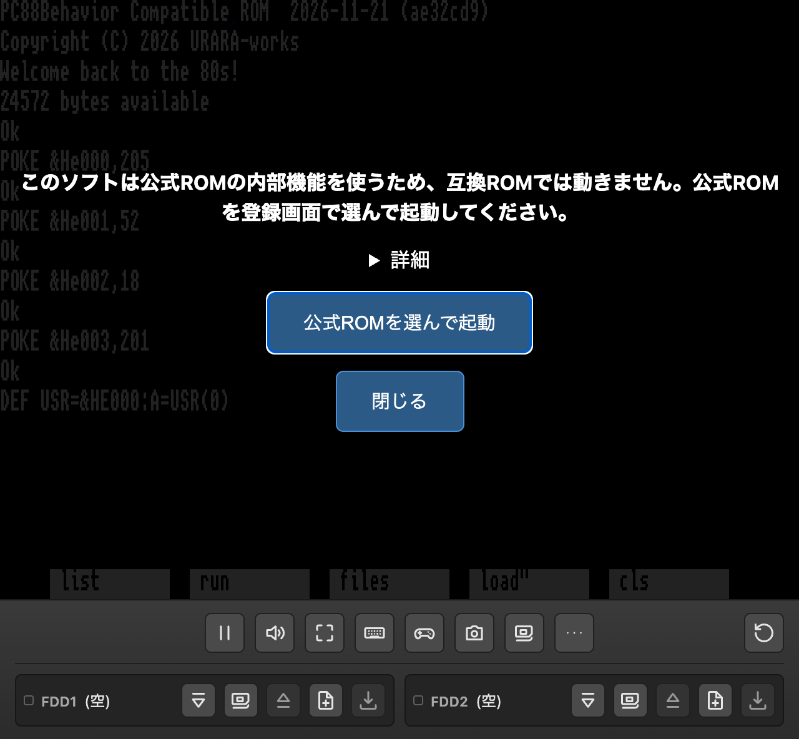

URLを開くだけで動く、ブラウザの中のPC-8801。
WebQ88 は、PC-8801 エミュレータ QUASI88 を libretro 化した QUASI88-libretro の wasm ビルドを ブラウザで動かす Webプレイヤーです。公式ROMの代わりにクリーンルームで作った互換ROM PC88Behavior を同梱しているため、何も用意しなくても、ページを開くだけで N88-BASIC 互換の 画面まで起動します。

インストール不要・ブラウザ完結
エミュレータ本体は wasm としてブラウザの中で動くため、アプリのインストールもブラウザ プラグインも不要です。対応ブラウザで URL を開けば、その場で PC-8801 が起動します。
キーボードにもゲームパッドにも、スマホにも
画面上に PC-88 配列のソフトキーボードを出せるので、タッチ操作でも入力できます。 タッチ用の十字キーとボタンを出すバーチャルパッド、接続した物理 ゲームパッド、ボタンや軸・物理キーボードの割当先を変えられる キー割当にも対応しています。テンキーの無いパソコンでは「テンキー代替」で メインの数字キーや矢印キーをテンキーとして使えます。
ディスクの自動保存とライブラリ

ゲストが書き込んだ内容は数秒おきにブラウザ(IndexedDB)へ自動保存され、次に開いたときに 自動で挿入し直されます。読み込んだディスクは「ディスクライブラリ」から選んで挿入、 名前変更、ダウンロード、削除ができます。読み込んだディスクや保存内容はサーバーへ送信されません。 ブラウザの保存はサイトデータの削除などで消えるため、大事なディスクはダウンロードして 保管してください。
ホストからテキスト送信
「…」→「入力」から ASCII や半角カナを貼り付けて送信できます。

AIがPC-8801を直接操作できるMCP対応
手元で動かす MCP サーバー経由で、Claude Code などの AI エージェントから WebQ88 を
操作できます。ブラウザで ?bridge=1 を付けて開くと、ページが
127.0.0.1 上のローカルの MCP サーバーへ接続し、キー入力、文字列の入力、
画面の確認、リセット、ディスクの挿入・排出などを行えます。MCP サーバーはあなたのマシン上で動きます。
セットアップの詳細は
mcp/README.md
を参照してください。
互換ROM同梱で、公式ROM無しに起動
同梱の互換ROM PC88Behavior は、外部から観測できる振る舞いだけを手がかりに書いたクリーンルーム実装で、公式ROMの バイト列を含みません。そのため、公式ROMを用意しなくても URL を開いてボタンを1つ押すだけで 起動できます。漢字ROMも、フリーの東雲フォントから作った自作のものを同梱しています。
公式ROMの内部機能を使うソフトは、互換ROMでは動きません。互換ROMは公式ROMを解析せずに作っているため、そうしたソフトに対応するには公式ROMの内部を解析するしかなく、対応していません。その場合は、止まった理由を画面に表示して、公式ROMでの起動をご案内します。

URLでディスクを指定して起動
?fd1=URL&fd2=URL&run=1 のようにURLパラメータでディスクイメージを
指定すると、ボタンを押さずにそのまま起動できます。ZIP/LZH は自動で展開され、中の
D88 イメージがライブラリに登録されます。ディスクを入れた状態の共有URLをコピーして、
そのまま人に渡すこともできます。
BGM・効果音に対応
BGM や効果音を再生できます。ツールバーのミュートボタンで音を消し、「…」メニューで 音量を調整できます(設定はブラウザに保存されます)。
4:3表示と補間
既定では実機のモニタのように4:3で表示します。「…」メニューの「表示比率」でドット等倍表示に、 「補間」でシャープ・バイリニアとニアレストを切り替えられます(設定は保存されます)。 スクリーンショットは PNG で保存でき、全画面表示にも対応しています。
手持ちの ROM も使える(制限モード)
お持ちの ROM ファイルを「…」→「ROM」から選び、「選択したROMで起動 / 再起動」で起動できます。保存済みROMは同じメニューで確認・削除でき、削除後は次回起動から互換モードになります。 ROM はブラウザの中だけで使い、どこにも送信しません。利用者の ROM で起動している間は 制限モードになり、AI から操作する機能の一部(画面本文の取得、 スクリーンショット、メモリの読み書きなど)は使えなくなります。ROM の入手と使用は、 利用者自身が適法に行ってください。
プライバシーとライセンス
利用者が読み込んだディスクイメージ・ROM は、あなたのブラウザの中でのみ扱われ、サーバーへ 送信されることはありません。それらの取り扱い・権利関係については利用者自身の責任となります。
本リポジトリのコード自体のライセンスは特に定めていません。コア(QUASI88-libretro)は BSD 3-Clause ライセンス、同梱の互換ROM(PC88Behavior のビルド成果物)は MIT ライセンスです。 漢字ROMの元になった東雲フォントはパブリックドメインです。 PC-8801 の公式 ROM・市販ソフトウェアのディスクイメージは一切同梱していません。